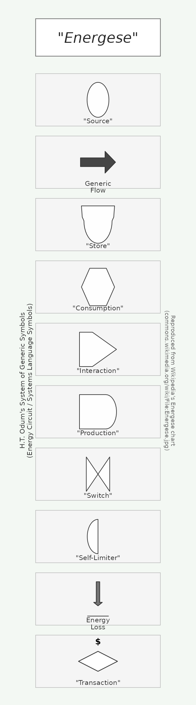
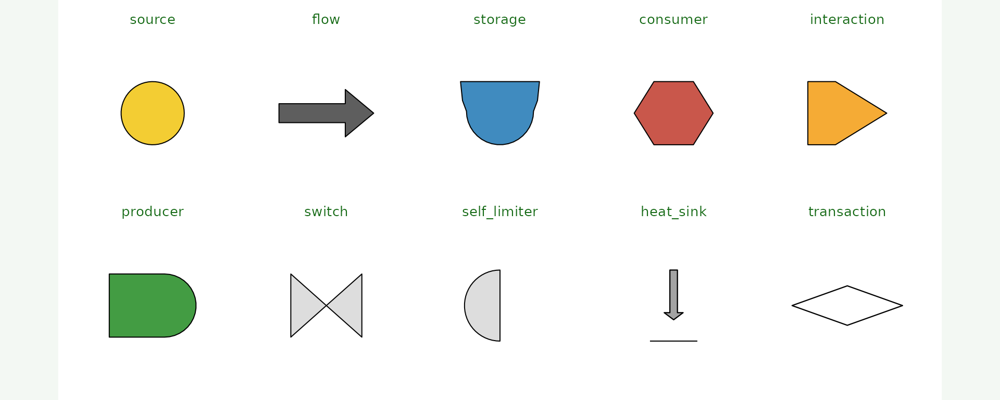
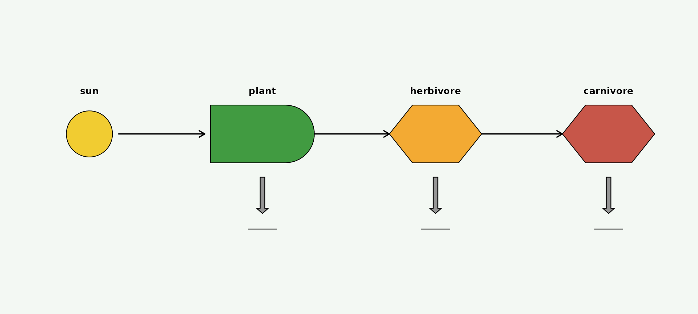
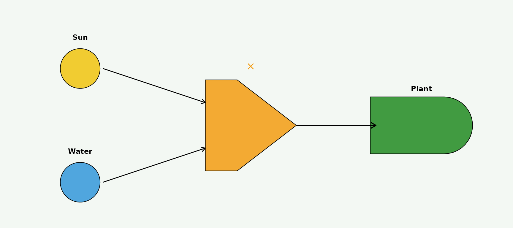
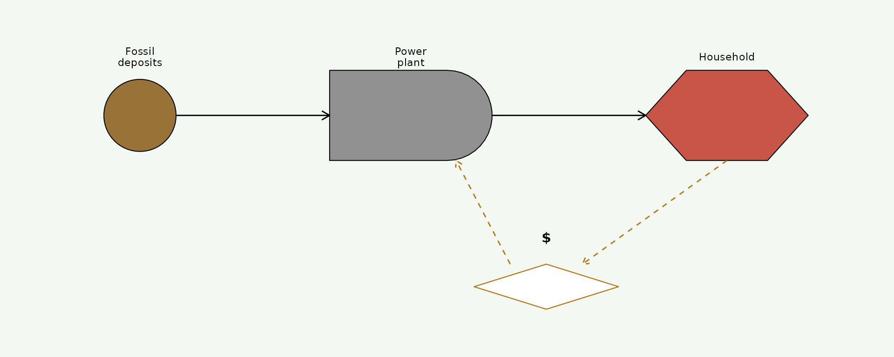
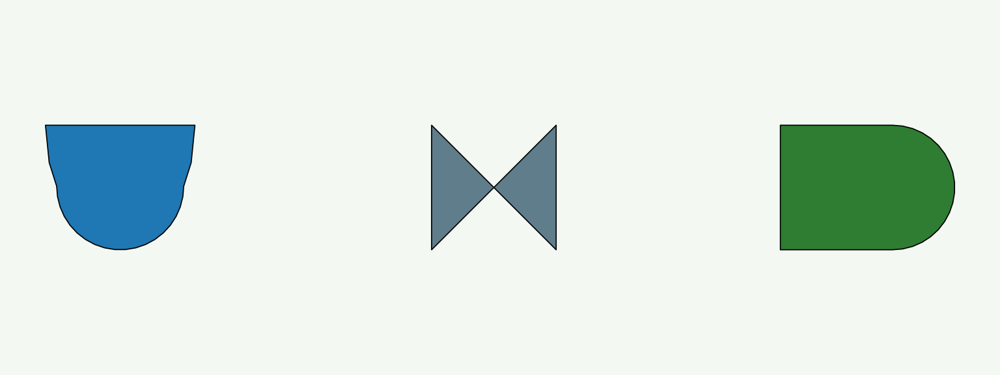

energese provides ggplot2 layers for
H.T. Odum’s Energy Systems Language (ESL) — also known as
Energese, Energy Circuit Language, or
Generic Systems Symbols. Odum developed the language in the
1950s during tropical-forest studies at El Verde, Puerto Rico (Odum
& Pigeon 1970, funded by the U.S. Atomic Energy Commission) and
formalised it in later systems-ecology work. See the Wikipedia
article for a general introduction.
The Wikipedia reference chart, reproduced
Wikipedia’s canonical Energese
reference chart shows every ESL symbol Odum used.
plot_energese_reference() renders the same chart directly
from R:
{kind=link}
library(energese)
plot_energese_reference()
#> Warning: Unknown or uninitialised column: `subgroup`.
#> Warning: Unknown or uninitialised column: `linetype`.
#> Warning: Unknown or uninitialised column: `subgroup`.
#> Warning: Unknown or uninitialised column: `linetype`.
#> Warning: Unknown or uninitialised column: `subgroup`.
#> Warning: Unknown or uninitialised column: `linetype`.
#> Warning: Unknown or uninitialised column: `subgroup`.
#> Warning: Unknown or uninitialised column: `linetype`.
#> Warning: Unknown or uninitialised column: `subgroup`.
#> Warning: Unknown or uninitialised column: `linetype`.
#> Warning: Unknown or uninitialised column: `subgroup`.
#> Warning: Unknown or uninitialised column: `linetype`.
#> Warning: Unknown or uninitialised column: `subgroup`.
#> Warning: Unknown or uninitialised column: `linetype`.
#> Warning: Unknown or uninitialised column: `subgroup`.
#> Warning: Unknown or uninitialised column: `linetype`.
#> Warning: Unknown or uninitialised column: `subgroup`.
#> Warning: Unknown or uninitialised column: `linetype`.
#> Unknown or uninitialised column: `linetype`.
#> Unknown or uninitialised column: `linetype`.
#> Warning: Unknown or uninitialised column: `subgroup`.
#> Warning: Unknown or uninitialised column: `linetype`.
Symbol semantics
Each symbol has a specific meaning in Odum’s framework:
- Source (circle) — a renewable or external input to the system. Sun, wind, tide, hydrocarbon deposits, uranium.
- Generic flow (arrow) — energy flow between components.
- Storage (Bertalanffy module — flat top, rounded bottom) — a reservoir of matter, energy, or information. Named after Ludwig von Bertalanffy, the general-systems theorist.
- Consumer (hexagon) — an entity that uses stored emergy.
- Interaction (right-pointing chevron) — a multiplicative junction where two or more flows combine. Odum’s canonical shape is a chevron, not a diamond.
- Producer (rounded rectangle with pointed right, aka “bullet”) — an autocatalytic unit that captures and concentrates emergy. Plants, agriculture, power stations.
- Switch (bowtie) — an on/off logic gate.
- Self-limiter (semi-circle) — a producer/consumer whose output saturates.
- Heat sink / Energy Loss (down-arrow to ground) — dispersed heat at the end of a transformation. Every transformation eventually terminates in a heat sink per the second law.
- Transaction (elongated diamond with $ label) — a money node, drawn with money flow going in the opposite direction of energy flow (dashed connecting lines).
Here is one of each rendered as a facet grid — a legend for the bullets above:
library(ggplot2)
library(energese)
sym <- data.frame(
role = factor(c("source", "flow", "storage", "consumer", "interaction",
"producer", "switch", "self_limiter", "heat_sink",
"transaction"),
levels = c("source", "flow", "storage", "consumer",
"interaction", "producer", "switch",
"self_limiter", "heat_sink", "transaction")),
x = 0, y = 0)
# Draw each symbol in its own panel
draw_one <- function(r) {
base <- ggplot(sym[sym$role == r, ], aes(x, y))
layer <- switch(r,
source = geom_odum_source (radius = 0.4),
flow = geom_odum_flow (width = 1.2, height = 0.6),
storage = geom_odum_storage (width = 1.0, height = 0.8),
consumer = geom_odum_consumer (width = 1.0, height = 0.8),
interaction = geom_odum_interaction(width = 1.0, height = 0.8),
producer = geom_odum_producer (width = 1.1, height = 0.8),
switch = geom_odum_switch (width = 0.9, height = 0.8),
self_limiter = geom_odum_self_limiter(width = 0.75, height = 0.9),
heat_sink = geom_odum_heat_sink (width = 0.6, height = 0.9),
transaction = geom_odum_transaction(width = 1.4, height = 0.5))
base + layer +
coord_fixed(xlim = c(-1, 1), ylim = c(-1, 1)) +
labs(title = r) +
theme_void(base_size = 9) +
theme(plot.title = element_text(hjust = 0.5, size = 10,
colour = "#176b17"))
}
# 10 panels via patchwork
suppressPackageStartupMessages(library(patchwork))
Reduce(`+`, lapply(levels(sym$role), draw_one)) +
plot_layout(ncol = 5)
#> Warning: Unknown or uninitialised column: `subgroup`.
#> Warning: Unknown or uninitialised column: `linetype`.
#> Warning: Unknown or uninitialised column: `subgroup`.
#> Warning: Unknown or uninitialised column: `linetype`.
#> Warning: Unknown or uninitialised column: `subgroup`.
#> Warning: Unknown or uninitialised column: `linetype`.
#> Warning: Unknown or uninitialised column: `subgroup`.
#> Warning: Unknown or uninitialised column: `linetype`.
#> Warning: Unknown or uninitialised column: `subgroup`.
#> Warning: Unknown or uninitialised column: `linetype`.
#> Warning: Unknown or uninitialised column: `subgroup`.
#> Warning: Unknown or uninitialised column: `linetype`.
#> Warning: Unknown or uninitialised column: `subgroup`.
#> Warning: Unknown or uninitialised column: `linetype`.
#> Warning: Unknown or uninitialised column: `subgroup`.
#> Warning: Unknown or uninitialised column: `linetype`.
#> Warning: Unknown or uninitialised column: `subgroup`.
#> Warning: Unknown or uninitialised column: `linetype`.
#> Unknown or uninitialised column: `linetype`.
#> Unknown or uninitialised column: `linetype`.
#> Warning: Unknown or uninitialised column: `subgroup`.
#> Warning: Unknown or uninitialised column: `linetype`.
Composing a simple ecosystem diagram
Sun → producer (autotroph) → consumer (herbivore) → consumer (carnivore), each with a heat-sink arrow to ground:
library(ggplot2)
library(energese)
nodes <- data.frame(
x = c(1, 4, 7, 10),
y = c(1.5, 1.5, 1.5, 1.5),
role = c("sun", "plant", "herbivore", "carnivore"))
ggplot() +
geom_odum_source (data = nodes[1, ], aes(x = x, y = y),
radius = 0.4, fill = "#F1C40F") +
geom_odum_producer(data = nodes[2, ], aes(x = x, y = y),
width = 1.8, height = 1.0, fill = "#228B22") +
geom_odum_consumer(data = nodes[3, ], aes(x = x, y = y),
width = 1.6, height = 1.0, fill = "#F39C12") +
geom_odum_consumer(data = nodes[4, ], aes(x = x, y = y),
width = 1.6, height = 1.0, fill = "#C0392B") +
# Energy flows
geom_segment(aes(x = 1.5, xend = 3.0, y = 1.5, yend = 1.5),
arrow = arrow(length = unit(0.10, "in")),
linewidth = 0.6) +
geom_segment(aes(x = 4.9, xend = 6.2, y = 1.5, yend = 1.5),
arrow = arrow(length = unit(0.10, "in")),
linewidth = 0.6) +
geom_segment(aes(x = 7.8, xend = 9.2, y = 1.5, yend = 1.5),
arrow = arrow(length = unit(0.10, "in")),
linewidth = 0.6) +
# Heat sinks below each consumer
geom_odum_heat_sink(data = nodes[2:4, ],
aes(x = x, y = y - 1.2),
width = 0.5, height = 0.9,
fill = "grey55") +
# Labels
geom_text(data = nodes,
aes(x = x, y = y + 0.75, label = role),
size = 3.4, fontface = "bold") +
coord_fixed(xlim = c(0, 11), ylim = c(-0.8, 3)) +
theme_void()
#> Warning: Unknown or uninitialised column: `subgroup`.
#> Warning: Unknown or uninitialised column: `linetype`.
#> Warning: Unknown or uninitialised column: `subgroup`.
#> Warning: Unknown or uninitialised column: `linetype`.
#> Warning: Unknown or uninitialised column: `subgroup`.
#> Warning: Unknown or uninitialised column: `linetype`.
#> Warning: Unknown or uninitialised column: `subgroup`.
#> Warning: Unknown or uninitialised column: `linetype`.
#> Warning: Unknown or uninitialised column: `subgroup`.
#> Warning: Unknown or uninitialised column: `linetype`.
#> Unknown or uninitialised column: `linetype`.
#> Unknown or uninitialised column: `linetype`.
#> Unknown or uninitialised column: `linetype`.
#> Unknown or uninitialised column: `linetype`.
Interaction junction — the chevron in action
The interaction symbol (chevron) has two inputs on its flat left edge and one output on its pointed right tip. Here a producer needs both sunlight and water:
d <- data.frame(x = c(1, 1, 4, 7), y = c(2.5, 0.5, 1.5, 1.5))
ggplot() +
geom_odum_source(data = d[1, ], aes(x = x, y = y),
radius = 0.35, fill = "#F1C40F") +
geom_odum_source(data = d[2, ], aes(x = x, y = y),
radius = 0.35, fill = "#3498DB") +
geom_odum_interaction(data = d[3, ], aes(x = x, y = y),
width = 1.6, height = 1.6,
fill = "#F39C12") +
geom_odum_producer(data = d[4, ], aes(x = x, y = y),
width = 1.8, height = 1.0, fill = "#228B22") +
# Two inputs → interaction
geom_segment(aes(x = 1.4, xend = 3.2, y = 2.5, yend = 1.9),
arrow = arrow(length = unit(0.08, "in"))) +
geom_segment(aes(x = 1.4, xend = 3.2, y = 0.5, yend = 1.1),
arrow = arrow(length = unit(0.08, "in"))) +
# Interaction → producer
geom_segment(aes(x = 4.8, xend = 6.2, y = 1.5, yend = 1.5),
arrow = arrow(length = unit(0.10, "in")),
linewidth = 0.6) +
# Labels
annotate("text", x = 1, y = 3.05, label = "Sun", fontface = "bold", size = 3.2) +
annotate("text", x = 1, y = 1.05, label = "Water", fontface = "bold", size = 3.2) +
annotate("text", x = 4, y = 2.55, label = "×", size = 5, colour = "#F39C12") +
annotate("text", x = 7, y = 2.15, label = "Plant", fontface = "bold", size = 3.2) +
coord_fixed(xlim = c(0, 8.2), ylim = c(0, 3.4)) +
theme_void()
#> Warning: Unknown or uninitialised column: `subgroup`.
#> Warning: Unknown or uninitialised column: `linetype`.
#> Warning: Unknown or uninitialised column: `subgroup`.
#> Warning: Unknown or uninitialised column: `linetype`.
#> Warning: Unknown or uninitialised column: `subgroup`.
#> Warning: Unknown or uninitialised column: `linetype`.
#> Warning: Unknown or uninitialised column: `subgroup`.
#> Warning: Unknown or uninitialised column: `linetype`.
A small economic system with money transaction
Fossil-fuel source → power plant → household consumer, with money flowing back the other way as a dashed transaction:
n <- data.frame(x = c(1, 4, 7.5, 5.5), y = c(2.5, 2.5, 2.5, 0.6))
ggplot() +
geom_odum_source(data = n[1, ], aes(x = x, y = y),
radius = 0.4, fill = "#8A5A16") +
geom_odum_producer(data = n[2, ], aes(x = x, y = y),
width = 1.8, height = 1.0, fill = "#7F7F7F") +
geom_odum_consumer(data = n[3, ], aes(x = x, y = y),
width = 1.8, height = 1.0, fill = "#C0392B") +
geom_odum_transaction(data = n[4, ], aes(x = x, y = y),
width = 1.6, height = 0.5,
fill = "white", colour = "#B5791B") +
# Energy flows (left to right)
geom_segment(aes(x = 1.4, xend = 3.1, y = 2.5, yend = 2.5),
arrow = arrow(length = unit(0.10, "in"))) +
geom_segment(aes(x = 4.9, xend = 6.6, y = 2.5, yend = 2.5),
arrow = arrow(length = unit(0.10, "in"))) +
# Money flow (right to left, dashed) via the transaction node
geom_segment(aes(x = 7.5, xend = 5.9, y = 2.0, yend = 0.85),
arrow = arrow(length = unit(0.08, "in")),
linetype = "dashed", colour = "#B5791B") +
geom_segment(aes(x = 5.1, xend = 4.5, y = 0.85, yend = 2.0),
arrow = arrow(length = unit(0.08, "in")),
linetype = "dashed", colour = "#B5791B") +
# $ label above transaction
annotate("text", x = 5.5, y = 1.15, label = "$",
fontface = "bold", size = 4) +
annotate("text", x = 1, y = 3.15, label = "Fossil\ndeposits", size = 3, lineheight = 0.9) +
annotate("text", x = 4, y = 3.15, label = "Power\nplant", size = 3, lineheight = 0.9) +
annotate("text", x = 7.5, y = 3.15, label = "Household", size = 3) +
coord_fixed(xlim = c(0, 8.8), ylim = c(0, 3.6)) +
theme_void()
#> Warning: Unknown or uninitialised column: `subgroup`.
#> Warning: Unknown or uninitialised column: `linetype`.
#> Warning: Unknown or uninitialised column: `subgroup`.
#> Warning: Unknown or uninitialised column: `linetype`.
#> Warning: Unknown or uninitialised column: `subgroup`.
#> Warning: Unknown or uninitialised column: `linetype`.
#> Warning: Unknown or uninitialised column: `subgroup`.
#> Warning: Unknown or uninitialised column: `linetype`.
Low-level helpers
If you need the polygon coordinates directly (for
gganimate transition_*(), patchwork
composition, non-ggplot renderers), the vertex-tibble helpers are also
exported:
odum_storage(cx = 0, cy = 0, w = 1, h = 1, id = "s1")
#> # A tibble: 25 × 3
#> x y id
#> <dbl> <dbl> <chr>
#> 1 -0.5 0.5 s1
#> 2 0.5 0.5 s1
#> 3 0.475 0.2 s1
#> 4 0.425 -0.075 s1
#> 5 0.419 -0.145 s1
#> 6 0.402 -0.213 s1
#> 7 0.374 -0.277 s1
#> 8 0.335 -0.336 s1
#> 9 0.288 -0.388 s1
#> 10 0.232 -0.431 s1
#> # ℹ 15 more rowsEach returns a tibble of (x, y, id) suitable for
geom_polygon(). The two multi-part symbols return their
sub-shapes distinguished by id:
head(odum_switch(cx = 0, cy = 0, w = 1, h = 1, id = "sw"), 4)
#> # A tibble: 4 × 3
#> x y id
#> <dbl> <dbl> <chr>
#> 1 -0.5 0.5 sw_L
#> 2 0 0 sw_L
#> 3 -0.5 -0.5 sw_L
#> 4 -0.5 0.5 sw_LAnd drawn: the vertex tibble becomes the polygon.
verts <- rbind(
transform(odum_storage(-3, 0, 1.2, 1.0, id = 1), role = "storage"),
transform(odum_switch ( 0, 0, 1.0, 1.0, id = 2), role = "switch"),
transform(odum_producer( 3, 0, 1.4, 1.0, id = 3), role = "producer"))
ggplot(verts, aes(x, y, group = id, fill = role)) +
geom_polygon(colour = "black", linewidth = 0.3) +
coord_fixed() +
scale_fill_manual(values = c(storage = "#1F77B4",
switch = "#607D8B",
producer = "#2E7D32"),
guide = "none") +
theme_void()
The switch polygon is two triangles emitted as one
id — draw them as a single geom_polygon()
layer and ggplot will keep the outline from crossing.
Prior art
To the author’s knowledge, energese is the first R (or
Python) grammar-of-graphics library for ESL. The closest peers are the
now-abandoned Java EmSim (Valyi & Ortega 2004, an ODE
integrator with no rendering API), the TypeScript GUI editor sholtomaud/odum-energy-language
by Sholto Maud (who also produced the Visio stencil that Wikipedia’s
reference chart is based on), and static SVG references from the UF
Center for Environmental Policy.
References
- Odum, H.T. & Pigeon, R.F. (eds.) (1970). A Tropical Rain Forest: A Study of Irradiation and Ecology at El Verde, Puerto Rico. U.S. Atomic Energy Commission.
- Odum, H.T. (1994). Ecological and General Systems: An Introduction to Systems Ecology. Rev. ed. University Press of Colorado.
- Odum, H.T. & Odum, E.C. (2000). Modeling for All Scales: An Introduction to System Simulation. Academic Press.
- Odum, H.T. (2007). Environment, Power, and Society for the Twenty-First Century: The Hierarchy of Energy. Columbia University Press.
- Brown, M.T. (2004). “A picture is worth a thousand words: Energy systems language and simulation.” Ecological Modelling 178: 83–100. https://doi.org/10.1016/j.ecolmodel.2003.12.008